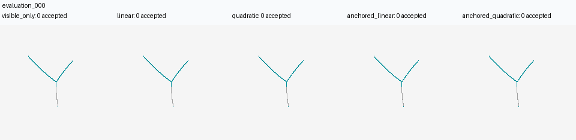
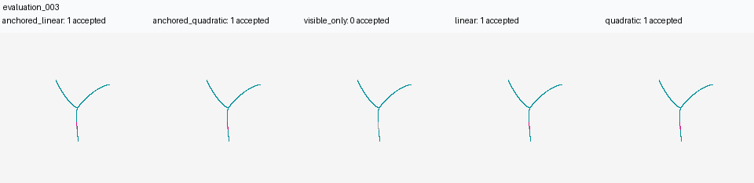
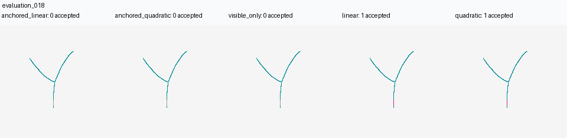
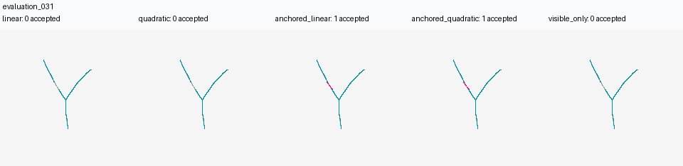
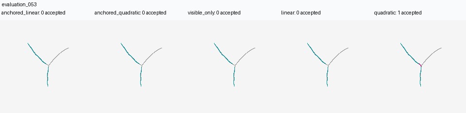
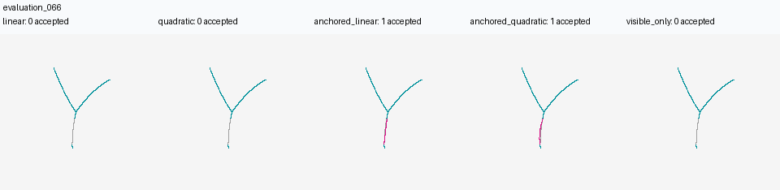
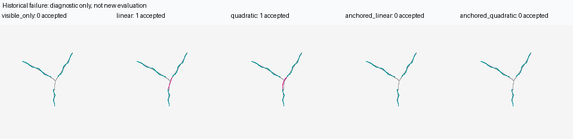

evaluation_000
All methods refuse; example of the all-case denominator

Copies of existing results, selected after evaluation to illustrate success, refusal and failure. This is not a new test set.
Columns: visible-only, Linear, Quadratic, anchored Linear, anchored Quadratic. Gray: synthetic reference; cyan: observation; magenta: inferred hypothesis.
Reproduction guide | Original technical findings | All-case metrics | Paired comparison | Frozen plan
All methods refuse; example of the all-case denominator

A case accepted by original and anchored matching

Accepted by original matching, refused by anchored matching

Accepted by anchored matching, refused by original matching

Original Quadratic incorrect connection

Another anchored-only accepted case

Historical diagnosis, excluded from the new 96-case evaluation.
